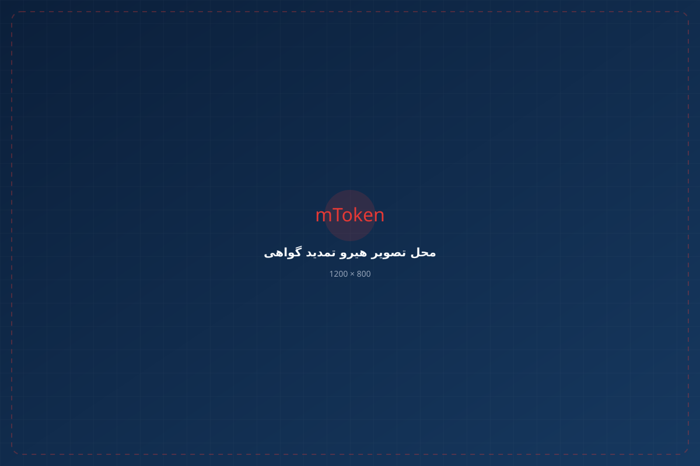
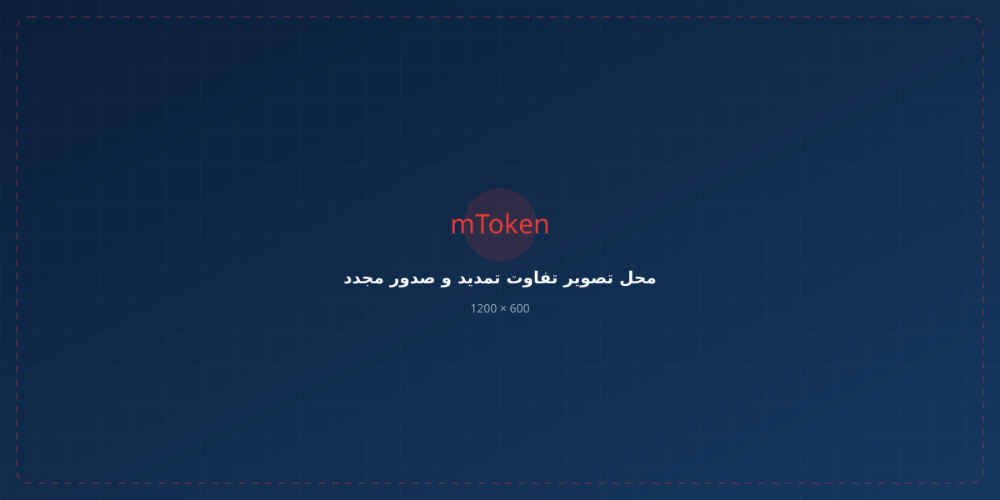

گواهی امضای دیجیتال خود را پیش از پایان اعتبار تمدید کنید و بدون وقفه از خدمات الکترونیکی، سامانههای دولتی و تجاری استفاده کنید.

اگر اعتبار گواهی دیجیتال شما رو به پایان است، بهتر است فرآیند تمدید را پیش از منقضی شدن گواهی انجام دهید.
در فرآیند تمدید، وضعیت گواهی و اطلاعات مورد نیاز بررسی شده و پس از تکمیل مراحل، گواهی جدید برای استفاده آماده میشود.
از ثبت درخواست تا آماده شدن گواهی جدید، مراحل به صورت مشخص و مرحلهبهمرحله انجام میشود.
فرآیند تمدید گواهی در چند مرحله ساده انجام میشود.
درخواست تمدید گواهی دیجیتال ثبت و اطلاعات اولیه متقاضی بررسی میشود.
اطلاعات هویتی و شرایط لازم برای تمدید بررسی و احراز هویت انجام میشود.
پس از تکمیل مراحل، گواهی دیجیتال جدید صادر خواهد شد.
گواهی جدید برای استفاده در سامانهها و خدمات مورد نیاز آماده میشود.
تمدید گواهی برای کاربران مختلف خدمات الکترونیکی کاربرد دارد.

برای افرادی که از امضای دیجیتال در خدمات الکترونیکی و سامانههای مختلف استفاده میکنند.
برای مدیران و نمایندگان شرکتها که برای امور سازمانی و تجاری به گواهی امضای دیجیتال نیاز دارند.
برای افرادی که از گواهی دیجیتال برای احراز هویت یا امضای الکترونیکی استفاده میکنند.
اجازه ندهید پایان اعتبار گواهی باعث توقف کار شما شود.